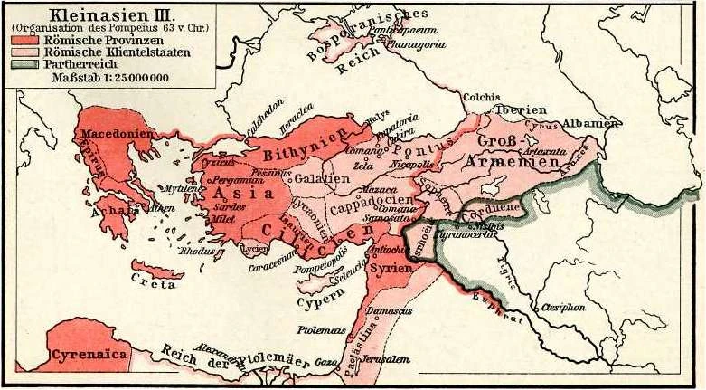

Geschichte Roms
vom Dorf zur Weltmacht
Jean-Luc Makiola - Justus Freund - Hannes Schellenberg - Jannik Ostwald
Roms Gründung
der Mythos
Roms Gründung
die Historie
Um 1000 v. Chr. Wanderten verschiedene Völkergruppen in das Gebiet des heutigen Italiens ein. Die Sabiner und Latiner ließen sich am unteren Tiber nieder und lebten als einfache Hirten und Bauern in strohgedeckten Hütten. Um 700 v. Chr. Kamen die Etrusker als neue Einwanderer und bauten Städte aus Stein und Ziegeln. Sie trockneten die sumpfigen Niederungen um die Hügel herum aus und siedelten auch dort. Etwa im Jahr 600 v. Chr. Erreichten die Etrusker Rom und betätigten sich dort als Handwerker, Kaufleute, Baumeister und Ärzte. Sie überzeugten die Latiner und Sabiner davon, eine Stadt mit einem Forum als Zentrum zu gründen, um sich gemeinsam besser vor Angriffen zu schützen. Die Bewohner Roms kontrollierten den wichtigsten Transportweg der Region und entwickelten sich zu einem bedeutenden Marktort. Die neue Stadt Rom wurde von einem etruskischen König regiert, der gleichzeitig Oberbefehlshaber des Heeres und oberster Priester war. Der König wurde vom Senat beraten, in dem die Oberhäupter der adligen Familien, auch Patrizier genannt, versammelt waren. Diese Patrizier hatten großen Einfluss auf wichtige Entscheidungen in Rom. Der Name der Stadt, Ruma, wurde vermutlich von den Etruskern gegeben. Während der etruskischen Herrschaft übernahmen die Römer einige Kenntnisse in Kunst und Technik sowie religiöse Praktiken wie das Beobachten des Vogelfluges und das Deuten von Vorzeichen aus den Eingeweiden geopferter Tiere. Dennoch betrachteten die römischen Adligen die Etrusker als fremde Unterdrücker. Um 500 v. Chr. Erhob sich der römische Adel gegen die etruskische Königsfamilie und vertrieb sie aus Rom. Damit endete die etruskische Oberhoheit und die Monarchie in Rom

Expansion

Die Geburt Roms: Aufstieg eines Stadtstaates
Im Jahr 500 v. Chr. markierte die Vertreibung der etruskischen Könige den Beginn eines neuen Kapitels in der Geschichte Roms. Die Gründung des Stadtstaates Rom auf der italienischen Halbinsel ebnete den Weg für einen bemerkenswerten Aufstieg. Mit der Etablierung einer eigenen Regierung und eines eigenen politischen Systems begann Rom seinen unaufhaltsamen Aufstieg zu einer bedeutenden Macht in der Region. Dieses Ereignis legte den Grundstein für eine bemerkenswerte Zivilisation, die in den kommenden Jahrhunderten eine führende Rolle spielen sollte.
500 v. Chr.
396 v. Chr.
280 v. Chr.
270 v. Chr.
264 v. Chr.
241 v. Chr.
216 v. Chr.
202 v. Chr.
117 n. Chr.
Vorteile
- Ressourcenzugang: Durch die Expansion erlangte Rom Zugang zu reichen Ressourcen wie Land, Silberminen und anderen natürlichen Ressourcen in den eroberten Gebieten.
- Wirtschaftlicher Aufschwung: Die Expansion ermöglichte es Rom, neue Handelswege zu erschließen und den Handel mit den eroberten Gebieten zu intensivieren. Dadurch profitierte die römische Wirtschaft von erhöhtem Wohlstand und Handelsvorteilen.
- Militärische Stärke: Durch die Eroberungen erweiterte Rom seine militärische Macht und schuf ein großes Heer, das für die Verteidigung des Römischen Reiches und die Durchsetzung seiner Interessen genutzt werden konnte.
- Politische Stabilität: Die Expansion stärkte das römische Imperium und schuf politische Stabilität in den eroberten Gebieten. Rom konnte seine politische Kontrolle über die eroberten Regionen ausüben und dort römische Gesetze und Institutionen etablieren.
- Kultureller Austausch: Die römische Expansion förderte den kulturellen Austausch zwischen Rom und den eroberten Gebieten. Rom übernahm kulturelle Elemente und Errungenschaften der eroberten Völker, während es seine eigene Kultur und Zivilisation verbreitete.
Nachteile
- Widerstand und Konflikte: Die Expansion führte zu Widerstand und Konflikten mit den eroberten Völkern. Dies führte zu langwierigen Kriegen und dem Verlust von Menschenleben auf beiden Seiten.
- Ausbeutung und Unterdrückung: In einigen eroberten Gebieten wurden die Einheimischen ausgebeutet und unterdrückt, um die Interessen Roms zu sichern. Dies führte zu sozialen Unruhen und Unzufriedenheit unter den unterworfenen Völkern.
- Ressourcenbelastung: Die Aufrechterhaltung und Verwaltung eines großen Imperiums erforderten erhebliche Ressourcen und finanzielle Mittel. Dies führte zu einer Belastung der römischen Wirtschaft und möglicherweise zu wirtschaftlichen Problemen im Inneren des Reiches.
- Kulturelle Assimilation: Die römische Expansion führte zur kulturellen Assimilation der eroberten Völker. Einige kulturelle Identitäten und Traditionen wurden durch die römische Dominanz unterdrückt oder verloren gegangen.
- Verlust der politischen Freiheit: Die eroberten Gebiete verloren ihre politische Unabhängigkeit und wurden zu Teilen des römischen Imperiums. Dies führte zu einem Verlust der politischen Freiheit und Selbstbestimmung für viele Völker.
Erfolgsursachen
Herrschaft
-
Herrschaft in Italien
Die Römer lebten auf der italischen Halbinsel nicht isoliert, sondern waren von verschiedenen Stämmen umgeben, gegen die sie sich mehrfach verteidigen mussten. Das Bedürfnis nach Sicherheit und die Ausdehnung des eigenen Machtbereichs prägten jahrhundertelang die Außenpolitik Roms. Um ihre Feinde erfolgreich abzuwehren, entwickelten die Römer verschiedene Formen der Herrschaftsausübung in Italien. Sie schlossen Bündnisse mit unabhängigen Städten und Stämmen, den sogenannten Bundesgenossen (socii). Diese blieben zwar formal eigenständig, waren aber durch die Verträge mit Rom stark gebunden. Sie verpflichteten sich, dauerhaft und ausschließlich mit den Römern verbündet zu sein und im Kriegsfall eine bestimmte Anzahl von Truppen bereitzustellen. Diese Hilfstruppen (auxilia) stellten etwa die Hälfte des römischen Heeres. Im Gegenzug erhielten die Bundesgenossen einen Teil der Kriegsbeute und des eroberten Gebiets. Zusätzlich errichteten die Römer Kolonien (coloniae) in eroberten Gebieten. In diesen neu gegründeten Städten wurden römische Bürger angesiedelt, um die Region zu sichern. Die Siedler waren oft Besitzlose oder ehemalige Soldaten. Sie verloren ihr Stimmrecht in der Volksversammlung und konnten daher weder Magistrate wählen noch über Gesetze abstimmen. Bei ihrer Rückkehr nach Rom erhielten die Kolonisten jedoch ihr volles Bürgerrecht zurück. Dies geschah jedoch selten, da die Siedler durch das Land, das sie als Kompensation für ihren Kriegsdienst oder den Verlust ihrer Rechte erhielten, für ihren Lebensunterhalt sorgen konnten. Auf diese Weise sicherten sich die Römer nicht nur militärische Unterstützung von den Bundesgenossen, sondern auch politische Kontrolle über eroberte Gebiete durch die Gründung von Kolonien. Diese Maßnahmen trugen zur Stabilisierung der römischen Vorherrschaft in Italien bei und bildeten die Grundlage für die spätere Ausdehnung des Römischen Reiches.
-
Weitere Herrschaftsformen
Nachdem die Römer überseeische Gebiete erobert hatten, wurden neue Herrschaftsformen eingeführt. Anstelle des Bündnissystems und der Kolonien Gründungen besetzten die Römer nun eroberte Gebiete mit eigenen Soldaten. Ein Prätor wurde als Statthalter eingesetzt und beherrschte den Militär- und Verwaltungsbezirk (provincia) im Namen Roms. Ein kleiner Stab von Mitarbeitern unterstützte den Prätor bei seinen Aufgaben. Um die Kontrolle über die Verwaltung zu gewährleisten, richteten die Römer bis zur Mitte des 2. Jahrhunderts v. Chr. Nur sechs Provinzen ein und schufen entsprechend viele zusätzliche Prätorenstellen. Aufgrund der Größe der Provinzen musste der Statthalter oft die lokale Führungsschicht in den Städten und bei den Stämmen in die Verwaltung einbinden. Römische Privatunternehmer beteiligten sich ebenfalls durch staatlich beauftragte Dienstleistungen. Die prätorischen Statthalter übten eine nahezu uneingeschränkte militärische und zivile Macht in den Provinzen aus und bereicherten sich oft durch wirtschaftliche Ausbeutung. Da ein ausreichender Verwaltungsapparat fehlte, praktizierten die Römer oft eine indirekte Form der Herrschaftsausübung. Könige fremder Völker blieben weiterhin im Amt und durften ihre eigenen Götter anbeten, wurden jedoch von Rom kontrolliert. Senatoren konnten entweder persönlich oder durch Gesandte die Politik des Landes beeinflussen. Der fremdländische Herrscher musste bedingungslos den Wünschen Roms folgen und gewährte römischen Magistraten, Gesandten und Händlern in seinem Reich Sonderrechte. Römische Unternehmer nutzten diese Vorherrschaft für eigene Geschäfte aus, was dazu führte, dass einige antike Reiche wirtschaftlich verarmten. Dies wiederum veranlasste die Herrscher oft dazu, Rom resigniert als Erben einzusetzen.
-
Die publicani
Die Publicani waren private Unternehmer im Auftrag des römischen Staates, die eine Vielzahl von Aufgaben übernahmen. Ursprünglich waren sie verantwortlich für den Transport von Kriegsmaterial, den Nachschub, die Bewirtschaftung von Minen und die Durchführung staatlicher Bauaufträge in Rom. Ihre wichtigste Aufgabe bestand jedoch darin, in den Provinzen Steuern für den Staat einzutreiben. Die Publicani zahlten die eingezogenen Steuern zunächst aus ihrem eigenen Vermögen an Rom und zogen sie dann in den Provinzen für sich selbst ein. Dieses System führte dazu, dass die Bewohner der Provinzen hohe Zinsen und Zusatzgebühren an die Publicani zahlen mussten, die den eigentlichen Steuerbetrag oft überstiegen. Die Publicani strebten danach, durch die Ausbeutung der Provinzen ihren Gewinn zu maximieren und nutzten ihre gewonnenen Geldmittel, um auch Einfluss auf die Politik zu nehmen. Die Publicani bildeten oft Handelsgesellschaften (societas), um die Risiken der Geschäfte auf mehrere Schultern zu verteilen. Senatoren wurden stille Teilhaber dieser Gesellschaften und erhielten große Gewinnanteile. Obwohl die Publicani oft als korrupt und betrügerisch angesehen wurden, profitierten die Senatoren von ihrer Tätigkeit und wurden durch ihre Beteiligung an den Geschäften reich und einflussreich.
-
Verwaltung
Anforderung; Mit der Expansion musste die Römische Republik ihre Verwaltungsfähigkeiten verbessern, um die eroberten Gebiete effizient zu verwalten. Lösung: Neue Provinzen wurden eingerichtet und lokale Verwaltungsstrukturen wurden entwickelt. Die Römer besetzten eroberte Gebiete mit eigenen Soldaten und setzten Prätoren als Statthalter ein, die den Militär- und Verwaltungsbereich im Namen Roms beherrschten. Rom tat dies da die Wege zu lang waren, um im konstanten Austausch zu bleiben und bei Angriffen des Gegners Anweisungen von Rom zu lange gebraucht hätten die äußeren Bereiche der Republik zu erreichen. Anforderung: Ursprünglich waren die meisten Ämter in der Römischen Republik auf ein Jahr begrenzt, um eine zu große Machtkonzentration zu vermeiden.
Lösung: Allerdings wurden Ausnahmen gemacht, wenn die Umstände es erforderten. Ein Beispiel dafür sind die Provinzstatthalter, die oft für einen längeren Zeitraum von mehreren Jahren im Amt blieben, um eine kontinuierliche Verwaltung und Stabilität in den eroberten Gebieten zu gewährleisten. Dies ermöglichte den Statthaltern eine ausführlichere Durchführung ihrer Aufgaben und eine effektivere Kontrolle über die Provinzen. Die Römer praktizierten oft eine indirekte Form der Herrschaftsausübung, indem sie Könige und lokale Führungsschichten im Amt beließen, diese jedoch kontrollierten und ihre politischen und militärischen Entscheidungen beeinflussten. -
Sicherheit
Anforderung: Mit einem größeren Gebiert folgten auch größere Grenzen und somit mehr Angriffsfläche für die Feinde Roms.
Lösung: Daher verlangten die Römer von Bundgenossen die Bereitstellung von Truppen um, das eigene Heer zu verstärken und ihre Eroberungen zu sichern. -
Sozial
Anforderung: Durch größere Landmassen wuchs auch die Bevölkerungszahl Roms stark an. Die Versorgung aller Menschen musste garantiert werden
Lösung: Die Agrarflächen müssen erweitert und bewirtet werden. Da Rom viele Kriegsgefangene inhaftiert hatte mussten diese als Sklaven die Agrarfelder bewirten, um die Versorgung des Volkes zu garantieren. Um auch Aufstände neu inkludierter Gebiete zu vermeiden, führte Rom das ius gentium ein, das aussagte, dass, theoretisch, alle Völker gleiches Recht haben. Von vielen neuen Bürgern wurde jedoch verlangt, dass sie im römischen Heer dienen. Dies trug zur Integration bei und gab ihnen die Möglichkeit Geld zu verdienen und sozial aufzusteigen. Jedoch konnte Rom so auch Kontrolle und deren Ideologie auf die neuen Bürger ausüben und das Heer zusätzlich verstärken, um die Grenzen zu halten und weitere Gebiete in der Zukunft erobern zu können. So adaptierten die „neuen“ Römer römische Sitten und ihr Zugehörigkeitsgefühl zu dem neuen Vaterland wurde enorm gestärkt.
-
Gewinner
Ritterschaft und Nobilität, gewährtem dem Staat Kredite für den Krieg und forderten sie mit der Erwartung auf Gewinne wieder zurück. Der Senat gab ihnen Land in den eroberten Gebieten und Adlige konnten gegen geringe Nützungsgebühr weite Teile des Ager publicus besetzen. Dies ist das Gebiet, welches den abtrünnigen Bundesgenossen gehört. So kam die Nobilität in den Besitz von ausgedehnten Landgütern und war in der Lage wirtschaftlich zu wachsen. Es konnten somit große Gewinne am Wein-, Öl- und Fleischmarkt erzielt werden. Rom konnte ab Mitte des 2. Jhd. Getreide günstig aus Spanien und Afrika importieren. Dadurch konnten mehr Steuereinnahmen durch den erhöhten Reichtum des Adels generiert werden.
-
Verlierer
Kriegsgefangene wie Sklaven wurden in Massen aufgekauft, um die Landgüter der Adligen zu bewirtschaften. Kleinbauern konnten sich den zeitintensiven Anbau von Olivenbäumen und Wein nicht leisten und mussten so, not gedrungen Land an Großgrundbesitzer verkaufen. Sie gingen als Tagelöhner nach Rom und bekamen manchmal neues Land in neuen Kolonien. Die Hoffnung auf Land verschwand 177 v. Chr., als die letzte Kolonie errichtet wurde und damit alles Land verteilt war. Die Landlosen wurden dann ein Teil der stark wachsenden, verarmten Stadtbevölkerung.
Heeresreform des Marius
Im alten Rom versuchten die Brüder Tiberius und Gaius Gracchus vergeblich, eine nachhaltige Agrarreform durchzuführen. Ihr Reformprogramm zielte darauf ab, die ungleiche Verteilung von Land zu korrigieren und ärmeren Bürgern Zugang zu fruchtbarem Boden zu verschaffen. Ihre Bemühungen wurden jedoch nach und nach zunichte gemacht, als der Staat wieder Zugang zum Land erhielt und mächtige Interessengruppen ihre Positionen verteidigten. Tiberius und Gaius Gracchus nutzten die Manipulierbarkeit der plebejischen Volksversammlung, um ihre politischen Ziele durchzusetzen. Sie brachen sogar das Gesetz, indem sie Gesetze gegen den Willen des Senats durchsetzten. Dies führte zu einer zunehmenden Spaltung zwischen den Volksvertretern und den Senatoren und untergrub die traditionelle Einigkeit zwischen ihnen. Die Politiker, die die Volksversammlung als Mittel der Macht nutzten und sich für die Interessen der einfachen Bürger einsetzten, wurden als "Popularen" bezeichnet. Die "Optimaten" hingegen handelten im Einklang mit der Autorität des Senats und vertraten die Interessen der wohlhabenden Eliten. Nach dem Tod der Gracchen wurde die römische Republik von militärischen Konflikten erschüttert, die die Schwäche der römischen Armee offenbarten. In dieser Zeit trat Gaius Marius auf den Plan. Er führte eine umfassende Heeresreform durch, die als die Heeresreform des Marius bekannt wurde. Marius strukturierte die Armee um und erlaubte es Bürgern, der Armee beizutreten, auch wenn sie sich ihre Ausrüstung nicht leisten konnten. Diese Änderung brach mit der bisherigen Praxis, dass nur wohlhabende Bürger in die Armee eintreten konnten, und führte zu einer größeren Rekrutierungsbasis. Marius' Heeresreform war von großer Bedeutung. Mit den neu aufgestellten Truppen konnte Marius erfolgreich germanische Stämme besiegen und trug wesentlich zur Stabilisierung der römischen Grenzen bei. Die neue Machtposition der Armee und die Loyalität der Soldaten gegenüber ihren Befehlshabern führten jedoch auch zu politischen Spannungen. Später rivalisierten Gaius Marius und Lucius Cornelius Sulla, ein weiterer wichtiger militärischer Führer und Politiker, miteinander. Sulla erhielt den Auftrag, gegen den griechischen König Mithradates zu kämpfen, während Marius sich mit einem Volkstribun gegen Sulla verbündete. Diese Rivalität und politische Instabilität führte schließlich zum Bürgerkrieg zwischen den Anhängern von Marius und Sulla. Im Verlauf des Bürgerkriegs gelang es Sulla, mit Gewalt seine Oberhoheit wiederzuerlangen. Er wurde zum Diktator ernannt und führte umfassende Verfassungsreformen durch, um die senatorische Herrschaft wiederherzustellen und seine politischen Gegner zu vertreiben. Nachdem Sulla die Ordnung wiederhergestellt hatte, legte er die Diktatur nieder und zog sich als Privatmann zurück. Trotz seiner Verfassungsreformen gelang es ihm nicht, die tiefgreifenden politischen Spannungen in der Römischen Republik dauerhaft zu beseitigen.
publicani
Die Publicani waren private Unternehmer im Auftrag des römischen Staates, die eine Vielzahl von Aufgaben übernahmen. Ursprünglich waren sie verantwortlich für den Transport von Kriegsmaterial, den Nachschub, die Bewirtschaftung von Minen und die Durchführung staatlicher Bauaufträge in Rom. Ihre wichtigste Aufgabe bestand jedoch darin, in den Provinzen Steuern für den Staat einzutreiben. Die Publicani zahlten die eingezogenen Steuern zunächst aus ihrem eigenen Vermögen an Rom und zogen sie dann in den Provinzen für sich selbst ein. Dieses System führte dazu, dass die Bewohner der Provinzen hohe Zinsen und Zusatzgebühren an die Publicani zahlen mussten, die den eigentlichen Steuerbetrag oft überstiegen. Die Publicani strebten danach, durch die Ausbeutung der Provinzen ihren Gewinn zu maximieren und nutzten ihre gewonnenen Geldmittel, um auch Einfluss auf die Politik zu nehmen. Die Publicani bildeten oft Handelsgesellschaften (societas), um die Risiken der Geschäfte auf mehrere Schultern zu verteilen. Senatoren wurden stille Teilhaber dieser Gesellschaften und erhielten große Gewinnanteile. Obwohl die Publicani oft als korrupt und betrügerisch angesehen wurden, profitierten die Senatoren von ihrer Tätigkeit und wurden durch ihre Beteiligung an den Geschäften reich und einflussreich.
optimaten / populaten
Im alten Rom bezeichneten sich die politischen Lager der Optimaten und der Popularen als zwei rivalisierende Gruppen mit unterschiedlichen Interessen und Ansichten. Die Optimaten waren eine konservative politische Gruppierung, die sich hauptsächlich aus Senatoren und den wohlhabenden Eliten zusammensetzte. Sie betrachteten den Senat als die wichtigste Institution und versuchten, die aristokratische Vorherrschaft in der Römischen Republik zu bewahren. Die Optimaten unterstützten im Allgemeinen eine Politik, die den Interessen der Oberschicht diente, und waren bestrebt, deren Privilegien und Macht zu erhalten. Sie strebten nach Stabilität und Kontinuität und sahen die Erhaltung der bestehenden sozialen Hierarchie als entscheidend an. Die Popularen hingegen waren politische Führer, die ihre Basis hauptsächlich in den ärmeren Bevölkerungsschichten, den Plebejern, hatten. Sie versuchten, die Interessen des einfachen Volkes zu vertreten und sich gegen die Dominanz der Oberschicht und den Einfluss des Senats zu behaupten. Die Popularen nutzten ihre rednerischen Fähigkeiten und die Manipulierbarkeit der Volksversammlung, um politische Reformen durchzusetzen, die auf soziale Gerechtigkeit, eine Landreform und bessere Rechte für ärmere Bürger abzielten. Sie versprachen populäre Maßnahmen, um die Zustimmung der Bevölkerung zu gewinnen und ihre politische Macht zu stärken.
Marius gegen Sulla & Pompeius und Crassus
Während Rom im Krieg mit den eigenen Bundesgenossen war, nutzte der griechische König Mithradates die Gelegenheit, in die römische Provinz Asia einzufallen und römische Bürger zu töten. In dieser Zeit wurde Lucius Cornelius Sulla von Senat beauftragt, nach Rom zu marschieren und seinen Oberbefehl gewaltsam zurückzuerlangen. Sulla brach das Verbot bewaffneter Truppen innerhalb Roms und führte einen Bürgerkrieg an, in dem er nicht nur Mithradates zum Frieden zwang, sondern auch seine innenpolitischen Gegner, wie zum Beispiel Marius, ausschaltete. Sulla wurde schließlich zum Diktator ernannt und führte Verfassungsreformen durch, um die Senatsherrschaft wiederherzustellen. Marius, der mit Sulla rivalisierte, verbündete sich mit einem populären Volkstribun, um Sulla das Kommando zu entziehen. Sulla konnte jedoch seine Truppen wiedererlangen und wurde später Privatmann. Nach Sullas gewaltsamer Neuordnung des Staates nutzten viele ehrgeizige Männer die Gelegenheit, um ihre eigene Karriere voranzutreiben. Gnaeus Pompeius, auch bekannt als Pompeius Magnus, unterstützte Sulla im Bürgerkrieg und erlangte durch seine militärischen Leistungen und sein Charisma Popularität bei der plebs urbana. Er strebte das Konsulat an, obwohl er erst 34 Jahre alt war und keine vorherigen Ämter bekleidet hatte. Zusammen mit Marcus Licinius Crassus, der sich durch die Niederschlagung eines Sklavenaufstands Ruhm erwarb und als reichster Mann Roms galt, bildete Pompeius eine Allianz. Durch den Stimmenkauf, politische Beziehungen und ihre Anhängerschaft bei der plebs urbana gelang es Pompeius und Crassus, im Jahr 70 v. Chr. Konsuln zu werden. Um die Gunst der plebs zu gewinnen, wurden einige Regelungen von Sulla rückgängig gemacht. Die Volkstribune und Zensoren erhielten ihre früheren Rechte zurück, und der Getreidepreis wurde staatlich subventioniert. Nach ihrem Konsulat wollten Pompeius und Crassus ihre politische Macht und ihr Ansehen bewahren. Pompeius erhielt außerordentliche Kommandos, um gegen die Seeräuber im Mittelmeer und den immer noch aktiven Mithradates vorzugehen. Mit uneingeschränktem Befehl über 20 Legionen, 5000 Reiter und 500 Schiffe hatte er eine immense Machtfülle, obwohl er kein politisches Amt innehatte. Der Senat war besorgt über eine derartige Ansammlung von Macht, insbesondere nach Sullas Marsch auf Rom. Die Plebejer hingegen unterstützten Pompeius und gewährten ihm den Oberbefehl. Pompeius beseitigte innerhalb kürzester Zeit die Seeräuber und besiegte Mithradates in Kleinasien. Er nutzte die Gelegenheit, um den östlichen Mittelmeerraum neu zu strukturieren, alte Provinzen zu erweitern und neue zu schaffen. Selbst kleinere Könige wurden von ihm abhängig und zahlten Tribute. Individuen, ganze Städte und seine Soldaten wurden eng an Pompeius gebunden. Im Jahr 61 v. Chr. entließ Pompeius seine Soldaten und feierte einen triumphalen Einzug in Rom. Sein Ruhm und seine Macht waren so groß geworden, dass er nicht einfach ein einfacher Senator sein konnte. Der Senat lehnte seine Neuordnung der Provinzen im Osten sowie die Versorgung seiner Soldaten mit Land ab. Pompeius suchte erneut Verbündete, und er fand sie in Crassus und Gaius Julius Caesar, einem Neffen des Marius.
